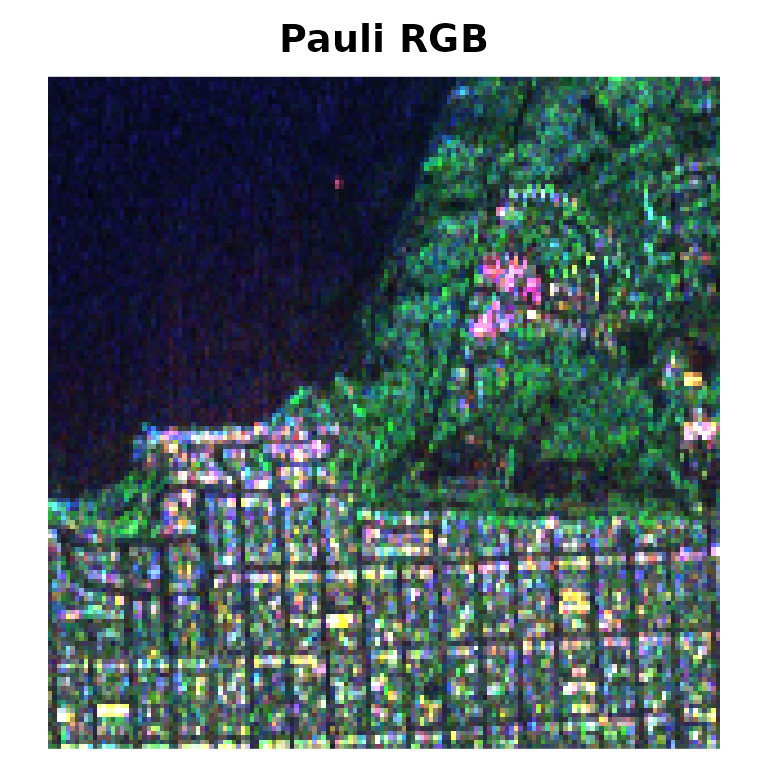
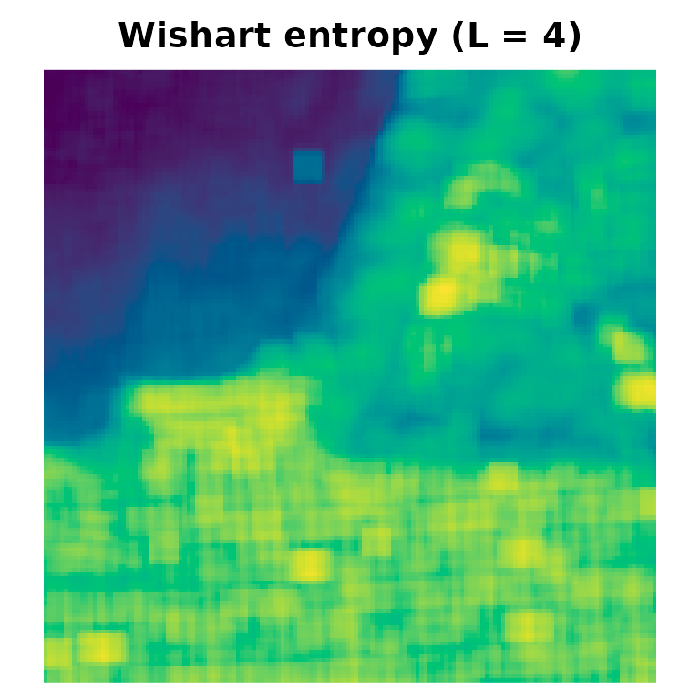
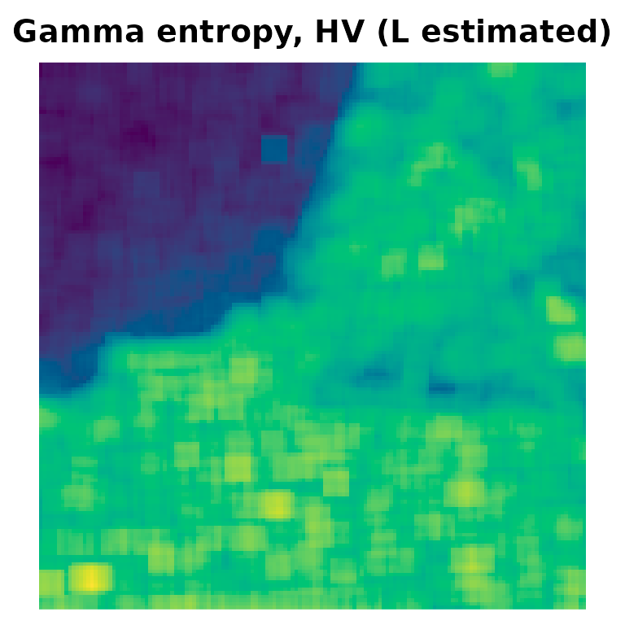
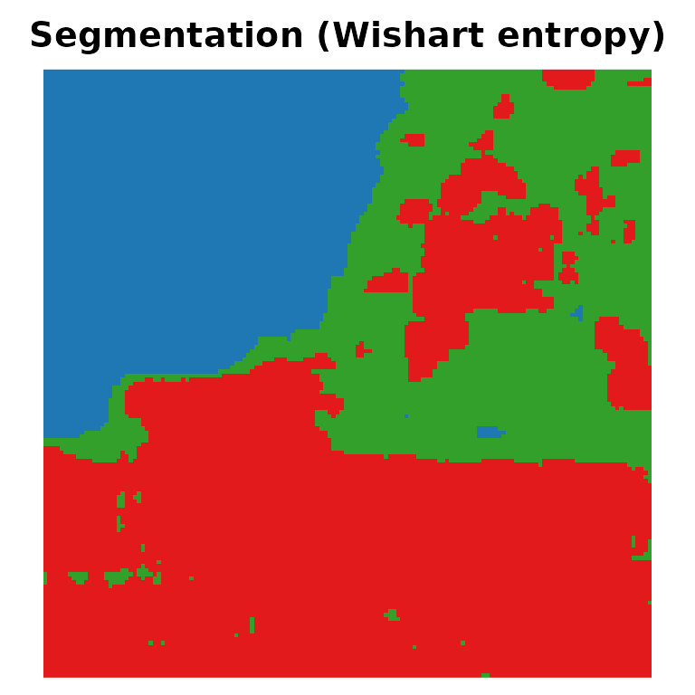
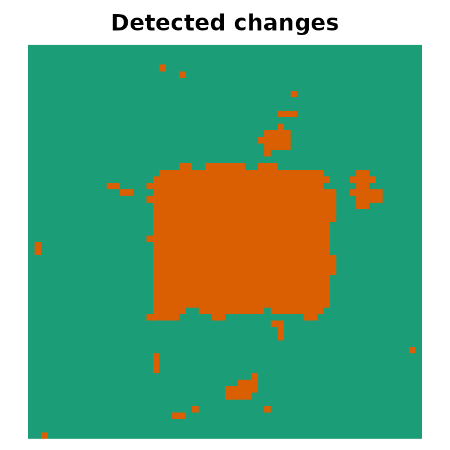

SITSAR gathers statistical and information-theoretic
tools for Synthetic Aperture Radar (SAR) and polarimetric SAR (PolSAR)
data. This vignette walks through the main building blocks:
distributions, R6 models, Shannon entropies, image tools, segmentation
and change detection.
1. Distributions
Intensity models (gamma, G0I, generalized
gamma) follow the usual d/p/q/r convention:
set.seed(1)
z <- rg0i(5, alpha = -3, gamma = 2, L = 4)
dg0i(z, alpha = -3, gamma = 2, L = 4)
#> [1] 0.8544422 0.4519509 0.5959714 0.3471399 0.7509855
pg0i(1, alpha = -3, gamma = 2, L = 4)
#> [1] 0.6803841
qg0i(0.5, alpha = -3, gamma = 2, L = 4)
#> [1] 0.6865009Matrix models for PolSAR data work with Hermitian matrices, stored
either as m x m x n complex arrays or as
n x m(m+1)/2 “vec” matrices:
Sigma <- polsar_example_sigma("forest")
Z <- rwishart_sar(3, Sigma, L = 4)
dwishart_sar(Z, Sigma, L = 4, log = TRUE)
#> [1] 13.45325 14.05683 10.33905
dg0p(Z, alpha = -3, Sigma = Sigma, L = 4, log = TRUE)
#> [1] 13.076392 13.297172 9.479703
dctpcw(Z, lambda = 1.5, Sigma = Sigma, L = 4, log = TRUE)
#> [1] 2.696874 4.281135 4.4661852. R6 models: estimation, entropy and its variance
Each model is an R6 class with the methods $fit(),
$density(), $random(), $entropy()
and $entropy_variance():
set.seed(2)
x <- rg0i(800, alpha = -3, gamma = 2, L = 4)
m <- G0I$new()$fit(x) # alpha, gamma and L estimated
m
#> <G0I> fitted to n = 800 observations
#> alpha = -3.10589
#> gamma = 1.9759
#> L = 4.15959
#> logLik = -634.984
#> Shannon entropy = 0.79373
m$entropy_variance()
#> [1] 0.001645796
generics::tidy(m)
#> # A tibble: 3 × 4
#> term estimate std.error fixed
#> <chr> <dbl> <dbl> <lgl>
#> 1 alpha -3.11 0.350 FALSE
#> 2 gamma 1.98 0.289 FALSE
#> 3 L 4.16 0.615 FALSE
generics::glance(m)
#> # A tibble: 1 × 7
#> model n logLik AIC BIC entropy converged
#> <chr> <int> <dbl> <dbl> <dbl> <dbl> <lgl>
#> 1 G0I 800 -635. 1276. 1290. 0.794 TRUEThe closed-form Shannon entropies are also available as functions:
entropy_g0i(alpha = -3, gamma = 2, L = 4)
#> [1] 0.8625083
entropy_wishart(Sigma, L = 4)
#> [1] -12.04464
entropy_g0p(alpha = -3, Sigma = Sigma, L = 4)
#> [1] -13.2626The compound truncated Poisson and compound geometric complex Wishart laws are fitted by the EM algorithm:
set.seed(3)
S <- rctpcw(300, lambda = 2, Sigma = Sigma, L = 4)
cw <- CompoundWishart$new("poisson")$fit(S, L = 4)
cw$params$lambda
#> [1] 1.974606
cw$iterations
#> [1] 533. Images
The SanFrancisco150 dataset is a 150 x 150 crop of an
L-band AIRSAR image, with the ground truth
SanFrancisco150_gt (ocean, vegetation and urban).
img <- SARImage$new(SanFrancisco150, looks = 4)
img
#> <SARImage> 150 x 150 PolSAR (3 x 3 covariance)
#> channels: HH, HV, VV
#> looks: 4
#> mean HH = 0.1735
#> mean HV = 0.04224
#> mean VV = 0.147
img$plot()
plot_map(SanFrancisco150_gt, main = "Ground truth",
palette = c("#1f78b4", "#33a02c", "#e31a1c"))
4. Entropy maps
entropy_map() estimates the model in a moving window
centred at each pixel and returns the map of Shannon entropies. The
Gamma and Wishart maps are fully vectorised:
Hw <- entropy_map(img, model = "wishart", window = 7, L = 4)
plot_map(Hw, main = "Wishart entropy (L = 4)")
Hhv <- entropy_map(img, model = "gamma", window = 7, channels = "HV")
plot_map(Hhv, main = "Gamma entropy, HV (L estimated)")

5. Entropy-based segmentation
Entropies are asymptotically Gaussian, so the entropy map is segmented with a Gaussian mixture fitted by EM (or stochastic EM):
set.seed(4)
seg <- EntropySegmenter$new(k = 3, method = "em")$fit(Hw)
seg
#> <EntropySegmenter> k = 3 | method: EM
#> iterations: 20 | converged: TRUE
#> weights: 0.265 0.268 0.467
#> class sizes: 5933 5773 10794
plot_map(seg$label_map(), main = "Segmentation (Wishart entropy)",
palette = c("#1f78b4", "#33a02c", "#e31a1c"))
kappa_statistics(SanFrancisco150_gt, seg$label_map(), match = TRUE)
#> # A tibble: 1 × 5
#> kappa variance std_error overall_accuracy n
#> <dbl> <dbl> <dbl> <dbl> <dbl>
#> 1 0.914 0.00000566 0.00238 0.945 225006. Hypothesis tests and change detection
entropy_test() compares two samples through their
entropies:
set.seed(5)
entropy_test(rg0i(300, -3, 2, 4), rg0i(300, -1.5, 1, 4), model = "g0i", L = 4)
#>
#> Shannon entropy test (G0I model)
#>
#> data: rg0i(300, -3, 2, 4) and rg0i(300, -1.5, 1, 4)
#> S = 39.345, df = 1, p-value = 3.552e-10
#> alternative hypothesis: true difference in entropies is not equal to 0
#> sample estimates:
#> entropy of x entropy of y
#> 0.7615233 1.4698632and change_map() applies the test pixel by pixel to two
co-registered images:
set.seed(6)
a <- matrix(rgammasar(60 * 60, mu = 1, L = 4), 60)
b <- matrix(rgammasar(60 * 60, mu = 1, L = 4), 60)
b[21:40, 21:45] <- rgammasar(500, mu = 3, L = 4)
cd <- change_map(a, b, model = "gamma", window = 5, L = 4, level = 0.01)
cd
#> <Entropy-based change map> model: gamma | level: 0.01
#> size: 60 x 60
#> changed pixels: 690 (19.17%)
plot_map(cd$change, main = "Detected changes")
truth <- matrix(FALSE, 60, 60); truth[21:40, 21:45] <- TRUE
change_detection_metrics(truth, cd$change)
#> # A tibble: 1 × 5
#> DR FA FP FN OA
#> <dbl> <dbl> <dbl> <dbl> <dbl>
#> 1 100 6.13 5.28 0 94.77. Divergences and classification
Divergences between fitted models are the core of the
divergence-based classifiers; see
vignette("tidymodels", package = "SITSAR").
divergence_wishart(polsar_example_sigma("forest"), polsar_example_sigma("urban"),
L = 4, type = "renyi", order = 0.5, kind = 3)
#> [1] 2.287259